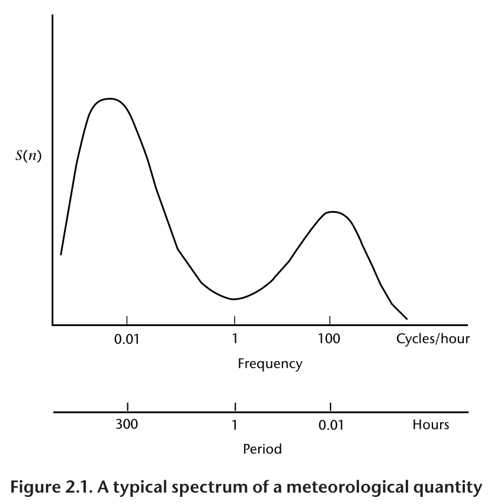
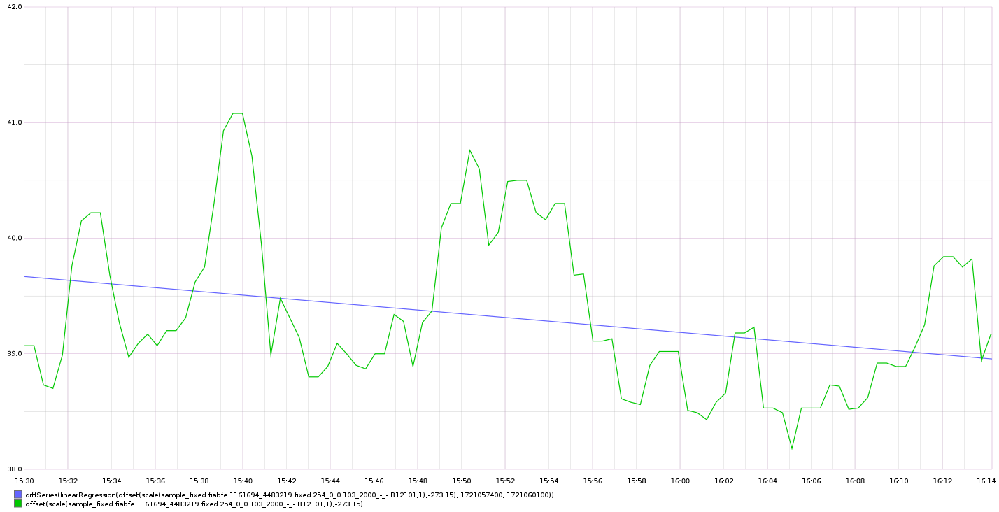
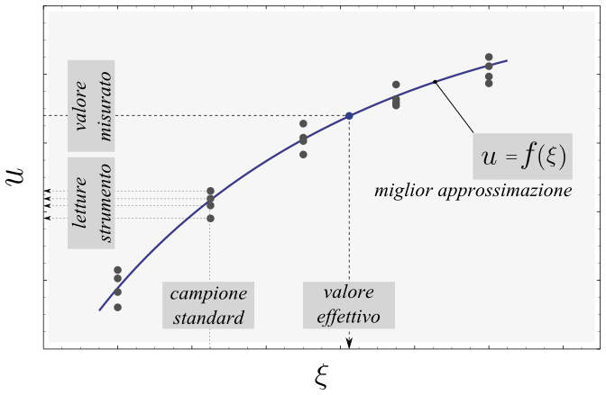
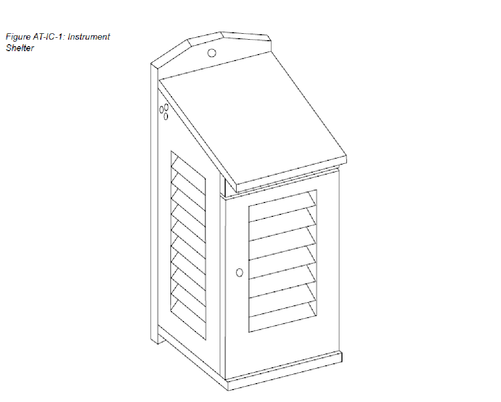
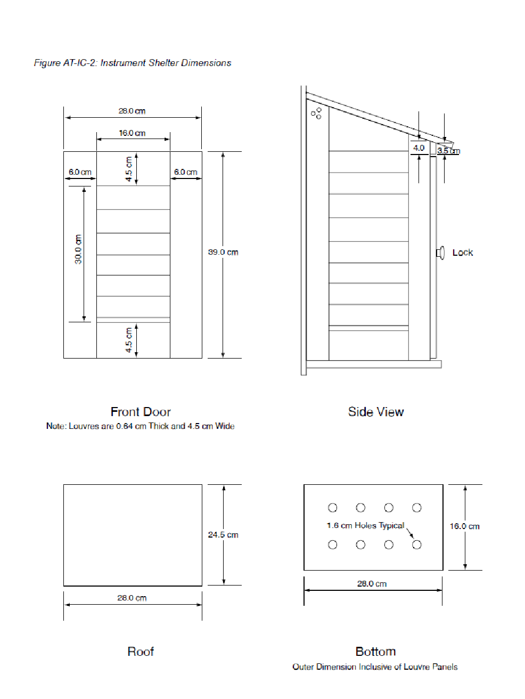
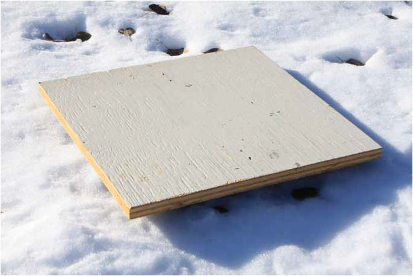
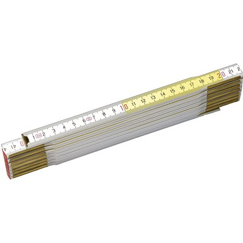

Misurare¶
Come effettuare corrette misurazioni di parametri ambientali.
Metrologia¶
Scienza della misurazione e delle sue applicazioni
Vocabolario internazionale di metrologia * https://www.ceinorme.it/it/normazione-it/vim/vim-content-it * Terminologia per le misurazioni analitiche Introduzione al VIM 3
pdf
Monitoraggio ambientale¶
Il monitoraggio ambientale descrive i processi e le attività che devono aver luogo per caratterizzare e monitorare la qualità dell'ambiente.
Il monitoraggio ambientale viene utilizzato quando le attività umane comportano un rischio di effetti dannosi sull'ambiente naturale o viceversa. serve per stabilire lo stato attuale di un ambiente o tendenze dei parametri ambientali.
I risultati del monitoraggio saranno rivisti, analizzati statisticamente e pubblicati. La progettazione di un programma di monitoraggio deve pertanto tenere conto dell'uso finale dei dati prima dell'inizio del monitoraggio.
Aria
Acqua
Suolo
Componenti fisiche, chimiche, biologiche, radiologiche ...
Definizioni¶
Data Level¶
Dati Level I , sono le letture dirette degli strumenti espresse in appropriate unità fisiche e georeferenziate
Dati Level II, dati riconosciuti come variabili meteorologiche; possono essere ottenuti direttamente da strumenti o derivati dai dati Level I
Dati Level III sono quelli contenuti in dataset internamente consistenti, generalmente su grigliato.
I dati scambiati a livello internazionale sono livello II o livello III
Campionamento¶
Processo per ottenere una sequenza discreta di misurazioni di una grandezza.
Campione¶
Una singola misura, in genere una di una serie di letture spot di un sistema di sensori. Si noti che questo differisce dal significato usuale in statistica di un insieme di numeri o misure che fa parte di una popolazione.
Un'osservazione¶
Il risultato del processo di campionamento, ovvero la quantità riportata o registrata (spesso chiamata anche misura). Nel contesto dell'analisi delle serie temporali, un'osservazione deriva da un certo numero di campioni.
Una misura¶
La definizione ISO è "un insieme di operazioni aventi per oggetto la determinazione del valore di una grandezza". Nell'uso comune, il termine può essere utilizzato per indicare il valore di un campione o di un'osservazione.
Tempo di campionamento o periodo di osservazione¶
La durata del tempo in cui viene effettuata un'osservazione, durante la quale vengono prelevati un certo numero di campioni individuali.
Intervallo di campionamento¶
L'intervallo di tempo tra osservazioni successive.
Funzione di campionamento o funzione di ponderazione¶
Nella sua definizione più semplice, un algoritmo per calcolare la media o filtrare i singoli campioni.
Frequenza di campionamento¶
La frequenza con cui vengono prelevati i campioni. La distanza tra i campioni è il tempo che intercorre tra un campione e l'altro.
Attenuazione¶
Processo di attenuazione delle componenti ad alta frequenza dello spettro senza influenzare in modo significativo le frequenze più basse. Di solito viene effettuato per rimuovere il rumore (errori e fluttuazioni casuali non rilevanti per l'applicazione).
Filtro¶
Dispositivo che consente di attenuare o selezionare le frequenze prescelte. L'attenuazione viene eseguita da un filtro passa-basso e i termini attenuazione e filtraggio sono spesso usati in modo intercambiabile in questo senso. In questo senso. Tuttavia, esistono anche filtri passa-alto e passa-banda. Il filtraggio può essere una proprietà dello strumento, come l'inerzia, oppure può essere eseguito elettronicamente o numericamente.
Accuratezza e Precisione¶
L’accuratezza è la vicinanza di un valore misurato al suo valore reale (accuracy is the closeness of a measured value to its true value) e in buona parte dipende dallo strumento. Per esempio, nelle misure ecologiche, il metodo delle trappole per la stima della quantità di individui in una popolazione e quello del C-14 per la produzione di plancton nell’oceano tropicale hanno una accuratezza molto bassa; cioè possono essere molto distanti dal valore reale. Ogni stima, ripetuta nelle stesse condizioni, può dare la metà del valore reale. Uno strumento o un reagente che forniscono una risposta sbagliata spesso sono tarati in modo non corretto e sono definiti inaccurati; i valori ottenuti sono biased.
Nel processo di misurazione con uno strumento inaccurato si commette un errore sistematico, chiamato appunto bias. Esso rappresenta un problema importante e ricorrente, in molte tecniche di stima di una quantità. In varie discipline, il progresso è spesso collegato alla ricerca di metodi di misurazione più accurati.
La precisione (ripetibilità) è la vicinanza di misure ripetute al medesimo valore (precision is the closeness of repeated measuments to the same item). Spesso dipende dalla capacità del tecnico di ripetere la misurazione con le stesse modalità e ha origine dalla sua esperienza o abilità.
I concetti di accuracy, precision e bias applicati a una misura di peso sono rappresentati graficamente nella figura successiva tratta dall’ottimo testo, per la stima di popolazioni animali e vegetali, di Charles J. Krebs del 1999 (Ecological methodology, 2nd ed. Menlo Park, CA, Cummings, pp. XII, 620),
figura A e B
figura C e D
Nella figura A le misure sono accurate, vicine al valore vero (true value), e molto precise (high precision).
Nella figura B le misure sono accurate ma poco precise (low precision), cioè differenti tra loro.
Nella figura C le misure sono non accurate (biased) ma molto precise (high precision).
Nella figura D le misure sono non accurate (biased) e poco precise (low precision).
Esempio: la differenza tra accuratezza e precisione si può spiegare facilmente utilizzando l’analogia di una freccia lanciata verso un bersaglio. L’accuratezza descrive la vicinanza della freccia al barilotto.
{kind=link}
{kind=link}
Se venissero lanciate diverse frecce, la precisione verrebbe indicata dalle dimensioni del gruppo di frecce. Se le frecce sono raggruppate tutte insieme, il tiro viene considerato preciso.
Leggi di scala¶
Le leggi di scala riguardano il comportamento di una struttura in funzione della scala da cui la si guarda. Per i sistemi regolari, sia matematici sia fisici e naturali, il sistema a grande scala è, in genere, molto diverso da quello a piccola scala. Per esempio, la Terra è un punto rispetto alla scala galattica, poi se ci si avvicina appare come una sfera, dopo ancora come una superficie quasi piana, in seguito appaiono i rilievi montuosi e le coste, poi le città, e così via. Le strutture matematiche usuali sono, in genere, molto più semplici e perdono struttura alle scale molto piccole. Per esempio, una sfera può essere approssimata dal suo piano tangente.
A partire dalla struttura stessa dell'Universo a grande scala, passando per le complesse forme delle strutture biologiche, fino alle interazioni elementari tra i costituenti fondamentali della materia, tutti questi sistemi mostrano delle ben definite leggi di scala. Queste leggi caratterizzano il cambiamento del sistema sotto l'effetto di una trasformazione della scala delle lunghezze, e rappresentano un elemento essenziale per la comprensione della complessità del sistema.
Per un sistema con una scala caratteristica, come un atomo, le leggi di scala non sono particolarmente interessanti. Infatti, se consideriamo una scala di lunghezze dell'ordine di quella dell'atomo stesso, potremo definire in modo adeguato tutte le sue proprietà: il nucleo centrale e la distribuzione degli elettroni intorno a esso. Se però consideriamo una scala molto più grande, l'atomo diventa a tutti gli effetti puntiforme e non mostra proprietà particolarmente interessanti. Questa situazione cambia completamente se prendiamo in esame una struttura molto familiare, ma abbastanza complessa, come quella di un albero. In questo caso possiamo partire dagli atomi che formano molecole, che poi formano le cellule, le fibre, quindi le più piccole foglie e i rami, i quali sono man mano più grandi e mostrano ramificazioni sia a piccole sia a grandi scale. Infine, arriviamo all'intero albero che, per scale molto più grandi, può essere considerato anch'esso puntiforme. Esiste però un'ampia varietà di scale in cui le proprietà sono abbastanza simili, per esempio la biforcazione dei rami avviene sia per i rami piccoli sia per quelli più grandi. In questa regione di scale, diciamo dalle fibre al tronco, possiamo definire un'approssimativa invarianza di scala con le sue proprietà caratteristiche. Questa proprietà naturalmente si estende da una scala minima, quella delle fibre, a una massima, quella del tronco o dell'albero stesso. Queste proprietà di scala sono essenziali per la comprensione delle complessità della struttura e della sua funzionalità, e costituiscono una delle caratterizzazioni fondamentali delle strutture complesse.
Campionamento delle variabili¶
Le variabili atmosferiche come la velocità del vento, la temperatura, la pressione e l'umidità sono funzioni di quattro dimensioni: due orizzontali, una verticale e una temporale. Esse variano irregolarmente in tutte e quattro e lo scopo dello studio del campionamento è quello di definire procedure di misurazione pratiche per ottenere osservazioni rappresentative con incertezze accettabili nelle stime della media e della variabilità.
L'argomento può essere affrontato a due livelli:
A livello elementare, si può discutere il problema meteorologico di base, che consiste nell'ottenere un valore medio di una grandezza fluttuante rappresentativa di un determinato intervallo di campionamento in un dato momento, utilizzando sistemi strumentali con tempi di risposta lunghi rispetto alle fluttuazioni. Al livello più semplice, ciò comporta considerazioni sulle statistiche di un insieme di misure e dei tempi di risposta degli strumenti e dei circuiti elettronici;
Il problema può essere considerato in modo più preciso facendo uso della teoria dell'analisi delle serie temporali, del concetto di spettro delle fluttuazioni e del comportamento dei filtri. Questi argomenti sono necessari per il problema più complesso dell'utilizzo di strumenti a risposta relativamente rapida per ottenere misure soddisfacenti della media o dello spettro di una grandezza che varia rapidamente, come il vento.
È importante riconoscere che una variabile atmosferica in realtà non viene mai campionata. È solo possibile avvicinarsi il più possibile campionando l'uscita di un sensore di quella variabile. La distinzione è importante perché i sensori non creano un analogo esatto della variabile rilevata. In generale, i sensori rispondono più lentamente dei cambiamenti dell'atmosfera e aggiungono rumore.
I sensori fanno anche altre cose, di solito indesiderabili, come la deriva nella calibrazione, la risposta non lineare, l'interferenza con la grandezza che stanno misurando, il fallimento più frequente di quanto previsto e così via, ma questa discussione riguarderà solo la risposta e l'aggiunta di rumore.
Rappresentatività nel tempo e nello spazio¶
Le osservazioni campionarie vengono effettuate a una frequenza e per un intervallo di tempo limitati su un'area circoscritta. In pratica, le osservazioni dovrebbero essere progettate in modo da essere sufficientemente frequenti da essere rappresentative delle parti non campionate della variabile (continua) e sono spesso considerate rappresentative di un intervallo di tempo più lungo e di un'area più ampia.
L'utente di un'osservazione si aspetta che sia rappresentativa, o tipica, di un'area e di un tempo, e di un intervallo di tempo. Quest'area, ad esempio, può essere "l'aeroporto" o l'area compresa in un raggio di diversi chilometri e facilmente visibile da un osservatore umano. L'ora è quella in cui è stata fatta la segnalazione o è stato trasmesso il messaggio, mentre l'intervallo è una quantità concordata, spesso 1, 2 o 10 minuti.
Per rendere rappresentative le osservazioni, i sensori vengono esposti ad altezze standard e in posizioni non ostruite e i campioni vengono elaborati per ottenere valori medi. In alcuni casi, i sensori, ad esempio i trasmissometri, hanno una media spaziale intrinseca, che contribuisce alla rappresentatività dell'osservazione. L'osservazione umana della visibilità ne è un altro esempio. Tuttavia, il resto della discussione in questo capitolo ignorerà il campionamento spaziale e si concentrerà sul campionamento temporale delle misure effettuate in un punto.
Un esempio tipico di campionamento e media temporale è la misurazione della temperatura ogni minuto (i campioni), il calcolo di una media di 10 minuti (l'intervallo di campionamento e la funzione di campionamento) e la trasmissione di questa media (l'osservazione) in un rapporto sinottico ogni 3 ore.
Quando queste osservazioni vengono raccolte per un periodo dallo stesso sito, diventano esse stesse campioni in una nuova sequenza temporale con uno spazio di 3 ore. Quando vengono raccolte da un gran numero di siti, anche queste osservazioni diventano campioni in una sequenza spaziale. In questo senso, le osservazioni rappresentative sono anche campioni rappresentativi. In questo capitolo discutiamo dell'osservazione iniziale.
Gli spettri delle grandezze atmosferiche¶
Applicando l'operazione matematica nota come trasformata di Fourier, una funzione irregolare del tempo (o della distanza) può essere ridotta al suo spettro, che è la somma di un gran numero di sinusoidi, ciascuna con la propria ampiezza, lunghezza d'onda (o periodo o frequenza) e fase. In generale, queste lunghezze d'onda (o frequenze) definiscono "scale" o "scale di moto" dell'atmosfera.
La gamma di queste scale è limitata nell'atmosfera. A un estremo dello spettro, le scale orizzontali non possono superare la circonferenza della Terra o circa 40 000 km. Per scopi meteorologici, le scale verticali non superano le poche decine di chilometri. Nella dimensione temporale, invece, le scale più lunghe sono quelle climatologiche e, in linea di principio, non hanno limiti, ma in pratica il periodo più lungo non supera la lunghezza dei record. All'estremità breve, la dissipazione viscosa dell'energia turbolenta in calore stabilisce un limite inferiore. Vicino alla superficie della Terra, questo limite si trova a una lunghezza d'onda di pochi centimetri e aumenta con l'altezza fino a pochi metri nella stratosfera. Nella dimensione temporale, queste lunghezze d'onda corrispondono a frequenze di decine di hertz. È corretto dire che le variabili atmosferiche hanno una larghezza di banda limitata.
La Figura 2.1 è una rappresentazione schematica dello spettro di una grandezza meteorologica come il vento, misurato in una particolare stazione e in un determinato momento.
L'ordinata, comunemente chiamata energia o densità spettrale, è legata alla varianza delle fluttuazioni del vento ad ogni frequenza n. Lo spettro della Figura 2.1 ha un minimo di energia alla mesoscala intorno a un ciclo all'ora, tra picchi nella scala sinottica intorno a un ciclo ogni quattro giorni e nella microscala intorno a un ciclo al minuto. Le lunghezze d'onda più piccole sono di pochi centimetri e le frequenze più grandi sono di decine di hertz.
Errore standard¶
Derivato da un'opera di: Andrea Minini - email: info@andreaminini.com - PEC andreaminini@pec.it
licenza CC BY 4.0 Attribution 4.0 International https://creativecommons.org/licenses/by/4.0/
L'errore standard ex rappresenta la deviazione standard della media campionaria, ovvero quanto ci si aspetta che la media E(X) calcolata su un campione X differisca dalla vera media μ della popolazione.
L'errore standard è dato dalla formula:
Dove:
σ è la deviazione standard della popolazione, cioè una misura della dispersione dei dati nella popolazione.
n è la dimensione del campione, cioè il numero di osservazioni raccolte dal campione.
Se la media campionaria è E(X), allora si posso ragionevolmente affermare che la media della popolazione μ si trova approssimativamente all'interno dell'intervallo
E(X)±ex
Dalla formula
deduco che all'aumentare della dimensione del campione n l'errore standard diminuisce.
Questo avviene perché con campioni più grandi la media campionaria tende a essere più vicina alla media reale della popolazione.
Stima
La deviazione standard σ della popolazione campionata è raramente nota. Pertanto, l'errore standard della media viene solitamente stimato sostituendo σ con la deviazione standard σx del campione:
Esempio di campionamento¶
Questo un esempio di campionamento di temperatura con la retta di regressione lineare:
come ordine di grandezza si deduce che campionando ogni 30 secondi l'errore sulla temperatura media oraria è dell'ordine di grandezza del decimo di grado con campionamneti ogni 30 secondi
Qui alcune considerazioni sulla costante di tempo:
https://www.unirc.it/documentazione/materiale_didattico/597_2011_289_11765.pdf
pdf
Taratura e calibrazione¶
la taratura è un'operazione che permette di definire le caratteristiche metrologiche di uno strumento, allo scopo di definirne la precisione; la calibrazione ha come obiettivo quello di rendere lo strumento più accurato e spesso, conseguentemente, migliorarne la precisione
La taratura¶
La taratura può essere usata per la determinazione delle caratteristiche metrologiche dello strumento (es. accuratezza, ripetibilità, riproducibilità, linearità, ecc.) necessari per definirne la funzionalità, o per verificarne la rispondenza a dei requisiti. Inoltre permette di sapere qual è la variazione del valore della grandezza.
Curva di taratura
Una curva di taratura è una funzione di trasferimento che collega l'ingresso all'uscita. Il metodo si basa sul rapporto proporzionale tra la concentrazione e un dato segnale analitico (proprietà).
La calibrazione¶
L'insieme di operazioni svolte su un sistema di misura, affinché esso fornisca indicazioni prescritte in corrispondenza di determinati valori di una grandezza da sottoporre a misurazione
La calibrazione consiste nel confrontare i valori ottenuti da uno strumento di misura con la corrispondente misura di uno strumento di riferimento (o standard). Secondo l'Ufficio internazionale dei pesi e delle misure, la calibrazione è "un'operazione che, in condizioni specifiche, stabilisce in una prima fase una relazione tra i valori e le incertezze di misura provviste di standard e indicazioni corrispondenti alle incertezze di misura associate e in una seconda fase, utilizza queste informazioni per stabilire un rapporto per ottenere un risultato di misura da un'indicazione".
Da questa definizione si può dedurre che per calibrare uno strumento o uno standard è necessario uno strumento con una maggiore precisione (riferimento) che fornisca il valore convenzionale (misure di riferimento)
Metodologia¶
A confronto, dove una medesima grandezza viene contemporaneamente letta dallo strumento in calibrazione e da quello campione; a sostituzione, dove il campione genera direttamente la grandezza di riferimento che viene fatta misurare allo strumento in calibrazione;
La validazione dei dati¶
Per validazione dei dati si intende «il processo attraverso il quale si valuta se l’informazionepuò essere considerata consona alle finalità per le quali è stata prodotta» (ISTAT, 2001).
L’attività di validazione può essere allora definita, sempre secondo l’ISTAT, come «l’insiemedelle operazioni attraverso le quali si giudica lo scarto esistente fra gli obiettivi di qualità programmati in sede di progettazione dell’indagine [...] e i risultati effettivamente conseguiti».
Misure meteorologiche¶
Criteri generali per la scelta del sito¶
La stazione meteorologica deve sorgere in un luogo piano e libero, possibilmente il suolo deve essere coperto da un tappeto erboso da cui vanno eliminate erbacce e cespugli. Il taglio della copertura erbosa deve essere frequente in modo da tenere l'erba uniformemente bassa; l'erba tagliata deve essere asportata per evitare l'effetto pacciamante della stessa e le conseguenti modificazioni del regime di temperatura ed umidità del terreno. E' sempre sconsigliabile lastricare di cemento o asfaltare o coprire con pietre o ghiaia il terreno del sito; in tale condizione infatti il calore riverberato altera di diversi gradi la temperatura dell'aria falsando le misure. Se non vi fossero altre possibilità , in caso di montaggio su terrazzo si consiglia di predisporre sotto la capannina un ampio riquadro di terreno inerbito contenuto in apposito recipiente . Il parco strumenti dovrebbe situarsi ad una distanza minima pari 4 – 8 volte l'altezza degli ostacoli esistenti (alberi, siepi, edifici, muri etc.). Non devono esistere ostacoli che creino ombra ; brevi periodo di ombreggiamento al sorgere ed al tramontare del sole. La stazione ideale deve essere posta in un luogo realmente rappresentativo delle condizioni naturali della regione agricola o urbana considerata, ma non sempre nella ricerca dei siti per stazioni meteo ambientali è possibile raggiungere il completo rispetto di queste condizioni. In queste condizioni è consigliabile ricercare le migliori condizioni possibili avendo l'accortezza di documentare dettagliatamente le particolarità della collocazione della strumentazione
Temperatura e umidità¶
Schermi¶
La capannina meteorologica¶
La capannina solitamente di legno (scarsa conducibilità termica) e colorata con vernice bianca riflettente (minima assorbimento di radiazione); inoltre è realizzata in modo da garantire la circolazione dell'aria all'interno. Per evitare l'effetto della radiazione infrarossa emessa dal terreno, la capannina deve avere sulla base inferiore una doppia schermatura. La disposizione della capannina, con la porta disposta verso nord, evita che l'insolazione diretta penetri fino ai sensori di temperatura durante l'osservazione / manutenzione.
Istruzioni per la costruzione di una capannina meteorologica¶
La capannina per gli strumenti deve essere costruito con uno spessore di circa 2 cm di pino bianco o legno simile e dipinto di bianco, sia all'interno che all'esterno. È necessario installare una serratura per impedire la manomissione degli strumenti. All'interno devono essere installati dei blocchi di montaggio per garantire che il termometro max/min non tocchi la parete posteriore. Le parti devono essere avvitate o incollate e inchiodate. I piani sono specificati in unità metriche.
Pertanto, potrebbe essere necessario apportare piccole modifiche alle dimensioni in base alle dimensioni standard del legno nella propria regione. È più facile acquistare pannelli a lamelle prefabbricati, che di solito sono disponibili per l'acquisto. Il criterio principale per la costruzione delle feritoie è quello di garantire la ventilazione della pensilina dello strumento, impedendo al contempo l'ingresso diretto di luce solare e pioggia. Per evitare che la luce del sole penetri nel rifugio, si consiglia di sovrapporre leggermente ogni lamella alle lamelle adiacenti. Vedere la figura:
Inoltre, lo spazio tra le lamelle deve essere di circa 1 cm e l'angolo delle lamelle deve essere di circa 50-60 gradi rispetto all'orizzontale. Per le istruzioni di montaggio della pensilina, vedere l'immagine:
Schermo solare¶
Lo schermo o la protezione dalle radiazioni deve essere progettato per fornire un involucro con una temperatura interna uniforme e uguale a quella dell'aria esterna. Deve circondare completamente i termometri ed escludere il calore radiante, le precipitazioni e altri fenomeni che potrebbero influenzare la misurazione. Gli schermi con ventilazione forzata, in cui l'aria viene aspirata sull'elemento termometrico da un ventilatore, possono aiutare a evitare distorsioni quando il microclima all'interno dello schermo si discosta dalla massa d'aria circostante. Tale deviazione si verifica solo quando la velocità del vento naturale è molto bassa (< 1 m s-1). Quando si utilizza una ventilazione artificiale di questo tipo, occorre fare attenzione a evitare la deposizione di aerosol e gocce di pioggia sul sensore, che ne riducono la temperatura verso la temperatura di bulbo umido. Come materiale di schermatura, il metallo altamente lucidato e non ossidato è favorevole a causa della sua elevata riflettività e del basso assorbimento di calore. Tuttavia, il materiale termicamente isolante a base di plastica è preferibile per i suoi semplici requisiti di manutenzione. Il materiale termoisolante deve essere utilizzato se il sistema si basa sulla ventilazione naturale.
Schermi a lamelle¶
La maggior parte delle numerose varietà di schermi a lamelle o piattelli si basa sulla ventilazione naturale. Le pareti di una zanzariera di questo tipo dovrebbero essere preferibilmente a doppia lastra e il pavimento dovrebbe essere costituito da tavole sfalsate, ma è possibile trovare altri tipi di costruzione che soddisfino i requisiti di cui sopra.
Il tetto dovrebbe essere a doppio strato, con disposizioni per la ventilazione dello spazio tra i due strati. Nei climi freddi, a causa dell'elevata riflettività della neve (fino all'88%), lo schermo dovrebbe avere anche un doppio pavimento. Allo stesso tempo, però, il pavimento dovrebbe essere facilmente abbassabile o inclinabile, in modo da poter rimuovere la neve che entra nello schermo durante una tempesta.
Le dimensioni e la costruzione dello schermo devono essere tali da mantenere la capacità termica il più bassa possibile e consentire un ampio spazio tra gli strumenti e le pareti. Quest'ultima caratteristica esclude ogni possibilità di contatto diretto tra gli elementi di rilevamento del termometro e le pareti, ed è particolarmente importante ai tropici, dove l'insolazione può riscaldare i lati fino a causare un gradiente di temperatura apprezzabile nello schermo. Si deve anche evitare il contatto diretto tra gli elementi di rilevamento e il supporto del termometro.
Lo schermo deve essere dipinto sia all'interno che all'esterno con vernice bianca non igroscopica. Quando sono previste pareti doppie, lo strato d'aria tra di esse serve a ridurre la quantità di calore che altrimenti verrebbe condotta dalla parete esterna verso l'interno, soprattutto in caso di forte irraggiamento solare. Quando il vento è notevole, l'aria tra le pareti viene cambiata continuamente, in modo da ridurre ulteriormente la conduzione di calore verso l'interno dalle pareti esterne. La libera circolazione dell'aria in tutto lo schermo aiuta la temperatura della parete interna ad adattarsi ai cambiamenti dell'aria ambiente. In questo modo, si riduce l'influenza della parete interna sulla temperatura del termometro. Inoltre, la libera circolazione dell'aria all'interno dello schermo consente al termometro di seguire i cambiamenti dell'aria ambiente più rapidamente rispetto a quanto accadrebbe se fossero attivi solo gli scambi radiativi. Tuttavia, l'aria che circola attraverso lo schermo trascorre un tempo limitato a contatto con le pareti esterne e può subire un'alterazione della temperatura. Questo effetto diventa apprezzabile quando il vento è leggero e la temperatura della parete esterna è notevolmente diversa da quella dell'aria. Pertanto, la temperatura dell'aria in uno schermo può essere superiore alla temperatura reale dell'aria in una giornata.
Temperatura dell'aria¶
Definizione¶
Il WMO (1992) definisce la temperatura come una grandezza fisica che caratterizza il moto medio casuale delle molecole in un corpo fisico. La temperatura è caratterizzata dal comportamento per cui due corpi in contatto termico tendono a una temperatura uguale. La temperatura rappresenta quindi lo stato termodinamico di un corpo e il suo valore è determinato dalla direzione del flusso netto di calore tra due corpi. La WMO definisce la temperatura dell'aria come "la temperatura indicata da un termometro esposto all'aria in un luogo riparato dalla radiazione solare diretta".
Unità di misura e scala: Kelvin
Intervallo: 233,15 K / 323,15 K
Risoluzione: 0.1 K
Incertezza: 0,5 K
Costante di tempo: 20s
Campionamento: 1Hz
Tempo di mediazione dell'osservazione in uscita: 60s
Collocazione degli strumenti¶
I sensori di temperatura vengono racchiusi entro involucri che proteggono dalla radiazione diretta, generalmente ventilati anche in modo artificiale dalle cui prestazione dipende in gran parte il rendimento dei sensori stessi. L'altezza del sensore dal terreno deve essere compresa tra 180 cm e 200 cm.
Umidità dell'aria¶
Definizione¶
Le definizioni semplici delle grandezze più frequentemente utilizzate nella misurazione dell'umidità sono le seguenti:
Temperatura del punto di rugiada Td: la temperatura alla quale, a pressione costante, l'aria (o, più precisamente, la miscela aria-vapore) diventa satura di vapore acqueo.
Umidità relativa U: il rapporto in percentuale tra la tensione di vapore osservata e la tensione di vapore di saturazione alla stessa temperatura e pressione;
Specifiche¶
Unità di misura e scala
Temperatura del punto di rugiada |
Kelvin |
Umidità relativa |
percento % |
Campo di misura
Temperatura del punto di rugiada |
233.15 K / 303.15 K |
Umidità relativa |
0 - 100 |
Risoluzione
Temperatura del punto di rugiada |
0.1 K |
Umidità relativa |
2% |
Incertezza
Temperatura del punto di rugiada |
0.5 K |
Umidità relativa |
5% |
Costante di tempo
Temperatura del punto di rugiada |
20 s |
Umidità relativa |
40 s |
Frequenza campionamento
10 Hz
Periodo di media per l'osservazione
60 s
Collocazione degli strumenti¶
I sensori di umidità vengono racchiusi entro involucri che proteggono dalla radiazione diretta, generalmente ventilati anche in modo artificiale dalle cui prestazione dipende in gran parte il rendimento dei sensori stessi. L'altezza del sensore dal terreno deve essere compresa tra 180 cm e 200 cm.
Osservazioni manuali¶
All'interno del progetto RMAP vengono archiviate misure manuali delle seguenti grandezze:
altezza del manto nevoso (total snow depth)
visibilità (visibility)
tempo presente (current weather)
nel seguito viene data una descrizione della metodologia da seguire per produrre misure corrette di tali grandezze.
Altezza del manto nevoso (total snow depth)¶
Quando fare la misura¶
L'altezza totale del manto nevoso va fatta in due casi:
In presenza di manto nevoso (che verrà misurato in cm)
Quando è stata prevista una nevicata in un intorno del punto di osservazione, ma nel punto di osservazione non è presente manto nevoso (misura pari a 0 cm)
La misurazione di altezza nulla del manto è stata introdotta recentemente nei disciplinari WMO per distinguere il dato mancante dall'assenza di manto nevoso. In precedenza infatti il dato mancante veniva considerato automaticamente come indicativo di assenza del manto, introducendo un elemento di ambiguità che in alcuni casi ha portato ad errori di valutazione dell'estensione del manto nevoso. Questo errore in alcuni casi si è propagato su tutti i prodotti osservativi a valle fino ad alterare le analisi globali di ECMWF.
Collocazione del sito di misura¶
Il sito di misura deve consistere di una superficie piana regolare non soggetta ad accumuli anomali rispetto all'area circostante. Il sito quindi deve essere sufficientemente lontano da alberi, edifici, zone di passaggio. In particolare la distanza da ostacoli rilevanti, come edifici o alberi, dovrebbe essere pari al doppio dell'altezza degli ostacoli stessi.
In genere viene consigliata la collocazione sul sito di misura di una tavoletta di legno o compensato levigata e di colore bianco, di circa mezzo metro di lato, simile a quella nella seguente figura e detta Tavoletta Nivometrica. La tavoletta deve essere posta al livello del terreno.
In assenza di tale strumento, la misura si può fare su una qualsiasi superficie piana, possibilmente non metallica e non di colore scuro. Si sconsiglia la misura su un prato, dal momento che la presenza di erba sotto la neve può alterare la misura della altezza totale del manto nevoso.
In generale nel caso non si usi la tavoletta, si consiglia di fare più misure del manto nevoso in più punti nel raggio di qualche metro e di ottenere così il valore della misura finale come media dei campionamenti.
Strumenti di misura¶
La misura del manto nevoso va fatta utilizzando un righello rigido di lunghezza sufficiente o, meglio ancora, un metro ripiegabile di legno o di plastica, tipicamente utilizzato nei cantieri o dai falegnami, simile a quello in figura.
Come fare la misura¶
Quando si fa la misura bisogna seguire le seguenti procedure:
fare attenzione che il righello sia sempre in posizione perpendicolare al piano di misura
rilevare la misura ponendo sempre gli occhi più vicini possibili al punto di misura, così da evitare errori di parallasse (vedi figura nel seguito).
Visibilità¶
La misura di visibilità va fatta possibilmente individuando una serie di oggetti o ostacoli (case gruppi di alberi, cartelli stradali, ecc...) a distanza nota dall'osservatore. L'osservazione va semper fatta all'aperto, mai attraverso i vetri di una finestra o di una vetrina e senza usare di strumenti ottici (binocoli, telescopi, o simili). L'osservatore dovrebbe essere posto ad una altezza normale dal suolo (1.5 m circa) e non in cima a torri o balconi. La visibilità dovrebbe essere rilevata in diverse direzioni. Il valore più basso tra queli rilevati rappresenta la misura finale di visibilità.
Tempo presente¶
Quando si seleziona il tipo di "Tempo presente" bisogna procedere alla selezione di una voce tra quelle riportate nell'elenco. L'elenco è ordinato in base all'intensità e quindi alla rilevanza del fenomeno osservato: fenomeni più intensi o più rilevanti sono più in basso nell'elenco. Man mano ci si sposta in alto nell'elenco, si trovano eventi meno rilevanti. L'osservatore dovrà selezionare l'evento osservato partendo dal basso e potrà inserirne uno solo. Utilizzando questa procedura, inserirà automaticamente l'evento più significativo.
Tabella tempo presente
Codice |
Descrizione |
|---|---|
100 |
Nessun fenomeno significativo osservato |
101 |
Nubi generalmente in dissolvimento o con sviluppo in riduzione durante l'ultima ora |
102 |
Stato del cielo generalmente invariato durante l'ultima ora |
103 |
Nubi generalmente in formazione o sviluppo durante l'ultima ora |
112 |
Fulmini in lontananza |
110 |
Foschia (1000m < visibilita' < 10Km) |
127 |
Neve o sabbia sollevata o trasportata dal vento |
130 |
Nebbia (visibilita' < 1000m) |
150 |
Pioviggine (non congelantesi) |
155 |
Pioviggine congelantesi al suolo (moderata) |
160 |
Pioggia (non congelantesi) |
165 |
Pioggia congelantesi al suolo (moderata) |
167 |
Pioggia (o pioviggine) mista a neve, debole |
168 |
Pioggia (o pioviggine) mista a neve, moderata o intensa |
171 |
Neve, debole |
172 |
Neve, moderata |
173 |
Neve, forte |
174 |
Palline di ghiaccio, debole |
175 |
Palline di ghiaccio, moderata |
176 |
Palline di ghiaccio, forte |
177 |
Granelli di neve |
178 |
Cristalli di ghiaccio |
184 |
Rovesci di pioggia o pioggia intermittente,violenta |
185 |
Rovesci di neve o neve intermittente, debole |
186 |
Rovesci di neve o neve intermittente, moderata |
187 |
Rovesci di neve o neve intermittente, forte |
191 |
Temporale, debole o moderato, senza precipitazione |
192 |
Temporale, debole o moderato, con rovesci di pioggia e/o neve |
193 |
Temporale, debole o moderato, con grandine |
194 |
Temporale, forte, senza precipitazione |
195 |
Temporale, forte, con rovesci di pioggia e/o neve |
196 |
Temporale, forte, con grandine |
199 |
Tromba d'aria (Tornado) |
Misurare l'isola di calore urbana¶
Strumenti e metodi di misura L’isola di calore può essere misurata a diversi livelli e con diversa strumentazione:
S-UHI: in superficie (temperature delle superfici: strade, parchi, tetti) tramite misure in telerilevamento (da satellite)
C-UHI: nella canopea urbana, in genere con misure “in situ“ da stazioni fisse tradizionali (termometri) Da: Terrascope, EUMETSAT SenJnel 2 + 3
B-UHI: nell’Urban Boundary Layer (al di sopra della canopea) tramite misure su apposite torri o con sondaggi atmosferici
L'incertezza di misura comprende numerose fonti di incertezza, ciascuna delle quali è detta “componente dell'incertezza” (u 1 , u 2 , … u n ). In particolare, incertezze dovute a:
calibrazione (di fabbrica, in genere certificata) e taratura (periodica, a carico dell’utente)
ubicazione della stazione (“sitting“): dipende dal “misurando“ e dalle difficoltà logistiche dell’ubicazione
esposizione del sensore (“exposure“): dipende dalle difficoltà logistiche dell’esposizione
altre incertezze(invecchiamento dello shelter, deriva strumentale, ecc.)
NB: Le incertezze (se indipendenti) si compongono al quadrato: u^2 = ∑ ui^2
Ubicazione delle stazioni in ambito urbano¶
Le misure devono essere rappresentative di un’area urbana omogenea
E’ condizionata dalla necessità di risolvere spazialmente l’ambito urbano (scala)
E’ in genere condizionata da esigenze logistiche (alimentazione, accessibilità, amministrazione, ecc.)
Criteri specifici per stazioni urbane in funzione della scala spaziale orizzontale (WMO - Oke, 2004):
Mesoscala: le dimensioni tipiche della città, che influenza il tempo e il clima in un’area tipicamente di una o più decine di chilometri. Richiede sempre una rete idonea di stazioni per la sua caratterizzazione.
Scala locale: comprende strutture urbane e topografiche con esclusione di effetti alla microscala, ad esempio interi quartieri o aree con specifiche attività commerciali o industriali, tipicamente da uno a più chilometri e alcune stazioni.
Microscala: caratterizza ogni singola superficie o elemento urbano come singoli edifici, strade, giardini o parchi. Varia tipicamente da meno di un metro a centinaia di metri. Richiede almeno una stazione per elemento o tipologia di elemento urbano, standardizzando altezza di misura, tipo di superficie, distanza da ostacoli o elementi estranei. Ad esempio una LCZ è tipicamente a microscala.
L’effetto sul sensore dipende dalle caratteristiche di un’area posizionata sopravento
In funzione dell’intensità e della direzione di provenienza dei venti dominanti questo fattore determina la rappresentatività della stazione
Le percentuali in figura danno un’idea dei contributi che influenzano la misura da parte del sensore in presenza di vento
In condizioni ideali, l’area circostante il sensore dovrebbe essere sufficientemente omogenea per massimizzare la rappresentatività della misura
Oke, 2004: –Initial Guidance to Obtain Representative Meteorological Observations at Urban Sites¶
La scala spaziale verticale:¶
Altezza dell’UCL: altezza media degli edifici principali
Alltezza del RSL: altezza dello strato di rugosità (influenzato dagli edifici)
U: Profilo verticale del vento medio (spazialmente e verticalmente)
Zd : Lunghezza di spostamento del piano zero
Z0 : Lunghezza di rugosità
ZH : Altezza media degli elementi di rugosità (edifici): definisce l’altezza dell’UCL
Zr : Altezza dello strato di rugosità: definisce l’altezza del RSL
Esposizione dei sensori per le misure in ambito urbano¶
Le misure devono essere fatte su superfici che a microscala siano rappresentative dell’ambiente urbano a scala locale
I sensori devono essere centrati su un’area aperta dove il rapporto altezza/distanza degli edifici sia rappresentativo dell’ambiente circostante
In una strada, il rapporto altezza/distanza degli edifici si applica alla sezione della strada stessa. L’asse della strada dovrebbe essere in direzione N-S. L’altezza dal suolo è preferibilmente superiore ai 2 metri.
Particolare attenzione va dedicata all’efficienza della schermatura dalla radiazione di cui si raccomanda la ventilazione forzata
Posizionare i sensori ad almeno 5 ÷ 10 m da edifici più alti di 20 ÷ 30 m.
Attenzione ai camini e griglie di ventilazione!
La temperatura misurata sopra l’UCL (sensori su un palo), è influenzata non solo dall’aria scambiata con l'UCL ma anche dai tetti.
I tetti sono in genere molto più variabili termicamente di tutte le altre superfici.
All’interno dell’UCL la temperatura cambia relativamente poco con l’altezza, ma c’è in genere una discontinuità al livello dei tetti sia verticalmente che orizzontalmente: è pertanto preferibile posizionare i sensori ben al di sopra dei tetti circostanti.
L’estrapolazione di una misura sia in senso verticale che orizzontale è molto problematica (i metodi statistici possono funzionare, ma richiedono lunghe serie in genere non disponibili)
Misure Qualità dell'aria¶
Classificazione delle stazioni di monitoraggio¶
Non tutte le stazioni di monitoraggio della qualità dell’aria sono uguali. Possono differenziarsi per il tipo di sensori installati, per la loro posizione, e per il tipo di misurazione a cui sono preposte.
L’Agenzia Europea per l’Ambiente (https://www.eea.europa.eu/it) ha stilato dei criteri per la classificazione di questo tipo di centraline a seconda della loro tipologia e delle caratteristiche dell’ambiente in cui sono installate. Senza voler scendere troppo nei dettagli, possiamo dividere le stazioni in tre grandi categorie:
misurazione dell’inquinamento da TRAFFICO (T): stazioni che misurano il livello di inquinamento generato prevalentemente da emissioni da traffico, provenienti da strade limitrofe con intensità di traffico medio alta;
misurazione dell’inquinamento di FONDO (B): stazioni posizione lontano da specifiche fonti di inquinamento (industrie, traffico, riscaldamento residenziale, etc.) che non sono influenzate, cioè, da una fonte prevalente di inquinamento.
monitoraggio di fonti di inquinamento INDUSTRIALI (I): stazioni ubicate in una zona in cui l’inquinamento sia generato in prevalenza da singole industrie o da vicine zone industriali
Anche l’ambiente che accoglie la stazione viene categorizzato dalla stessa direttiva e suddiviso in aree di tipo Urbano (U), Suburbano (S) e Rurale (R).
Le aree urbane sono quelle densamente popolate, quelle suburbane, o periferiche, sono caratterizzate da un'alternanza di aree edificate ed aree libere da edifici, quelle rurali possono essere caratterizzate per esclusione.
Questa classificazione di massima viene affinata in base all’attività umana prevalente in aree Residenziali (R), Commerciali (C), Industriali (I), Agricole (A) e Naturali (N).
Le stazioni vengono indicate con una sigla che ne rappresenta il tipo, ad esempio, ad una stazione di misurazione del traffico situata in un’area urbana a vocazione commerciale sarà attribuito il codice TU-C, ad una che misura l’inquinamento di fondo in periferia, quello BS-R (in caso la prevalenza di strutture antropiche sia di tipo residenziale).
Non tutte le combinazioni di questi fattori possono essere utilizzate, ad esempio non sarà mai possibile classificare una stazione come TU-N perché per definizione un’area urbana, registra una forte presenza umana. A seconda dell’ambiente che le ospita, si considera che le stazioni coprano un’area che va da circa 200m² di una stazione installata in ambito urbano a diverse decine di chilometri per le stazioni situate in un ambiente rurale, o a centinaia di chilometri quadrati nel caso di aree rurali remote (distanti più di 50 km da centri abitati e zone industriali).
Le misurazioni attese dalle stazioni, quindi, dipenderanno dalla loro tipologia. La valutazione delle letture effettuate dovrà tenere conto delle stazioni circostanti e di altri fattori che sarebbe fuori luogo elencare in questo documento ma che possono essere un valido spunto di discussione da approfondire in classe.
Nelle linee guida per la predisposizione delle reti di monitoraggio della qualità dell’aria, l’Istituto Superiore per la Protezione e la Ricerca Ambientale individua le scuole come luoghi adatti all’installazione di stazioni di background urbano e suburbano.
Criteri per la selezione del sito di installazione¶
Per far sì che i dati raccolti dalle stazioni possano essere paragonabili, è importante che il posizionamento di queste ultime sia il più possibile omogeneo. Due sensori che misurano la concentrazione di particolato, posizionati su un palazzo, e posti uno a piano strada, e l’altro sul lastrico solare, ad esempio, daranno, nello stesso istante, valori che possono essere molto diversi tra di loro.
Le linee guida sono particolarmente dettagliate sul tipo di posizionamento dei punti di misura di una stazione in base ai parametri monitorati ed al tipo di stazione.
Allo stato attuale, le stazioni Stima misurano, oltre a temperatura ed umidità, PM2.5, PM10, CO2. Idealmente una stazione che registra questo tipo di parametri, dovrebbe essere posizionata ad altezza uomo intorno ai 2m dal livello del suolo, ma, per proteggere l’apparato da manomissioni e furti, si può prendere in considerazione la possibilità di posizionarle ad un’altezza che varia tra i 2 e 4 metri.
Visto che le concentrazioni di particolato diminuiscono con l’altezza, sarebbe opportuno che tutte le stazioni fossero installate ad un'altezza simile.
Anche la distanza dall’edificio che dovesse dare loro supporto influenza le misurazioni. Se possibile, bisognerebbe usare una staffa che distanzi la stazione di almeno 20 centimetri dal muro che la sostiene.
È importante assicurarsi che ci sia un buon circolo d'aria attorno alla stazione. In caso contrario i valori registrati potrebbero essere sottostimati. Anche una posizione troppo esposta potrebbe portare a valutazioni inesatte. Ad esempio, la turbolenza prodotta dai veicoli in transito potrebbe portare a misurazioni più alte dei valori realmente.
La stazione Stima ha bisogno di essere alimentata continuamente e di trasmettere periodicamente i campioni perché possano essere trasformati in osservazioni utilizzabili. Per fare ciò è necessario assicurarsi che il punto prescelto permetta alla stazione di collegarsi tramite rete Wi-Fi ad internet. Potrete trovare alcuni criteri per permettere un utilizzo sicuro e protetto della connessione più avanti in questa guida.